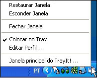
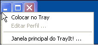

|
Introdução
O TrayIt! permite conservar o precioso espaço da Barra de Tarefas para janelas minimizadas. Para cada programa em que o TrayIt! é aplicado ele cria um no Tray (também conhecido como Bandeja do Sistema, que fica ao lado do relógio do sistema). Quando o programa ésta minimizado, esse ícone representa ele ao invés do habitual "retángulo minimizado".
É particularmente para tarefas em plano de fundo que você normalmente deixa rodando em seu PC o dia todo, como seu cliente de e-mail favorito, Real Player, etc..
Usando o TrayIt!
TrayIt! roda em Windows 95/98/Me, NT/2000/XP/Vista e não é
requerida nenhuma instalação.
Apenas crie uma nova pasta e coloque os arquivos TrayIt!.exe e TrayIt!.dll nela.
Quando iniciado, o TrayIt! vai mostrar uma caixa de diálogo com uma simples
explicação de como usá-lo. Você pode escolher executar o TrayIt! na inicialização
do Windows, selecionando "Opções" e marcando a caixa "Carregar
TrayIt! na inicialização do Windows".
|
  |
Opções Principais do programa
Você pode personalizar o comportamento do TrayIt! Selecionando as seguintes opções no menu "Editar/Opções":
- Carregar TrayIt! na inicialização do Windows - cria um atalho para o programa
TrayIt! na pasta Inicializar do usuário.
- Usar único clique em ícones do tray - quando desativada, você tem que
clicar duas vezes no ícone do Tray para ativá-lo.
- Agrupar ícones semelhantes no tray para cada programa - O TrayIt vai agrupar janelas semelhantes, mostrando apenas um ícone no tray com o qual você pode acessar o grupo.
- Minimizar quando em primeiro plano, ativar quando em plano de fundo - com
essa opção ativada, ao clicar no ícone do Tray vai minimizar a janela associada somente
somente quando ela já estiver em primeiro plano e caso não esteja, ela vai ser colocada
em primeiro plano.
Opções Para o(s) perfil(is) da(s) janela(s):
- Corresponder máscara abaixo com o título da janela ao criar o ícone no Tray
- quando essa opção está ativada, você pode especificar uma máscara que o TrayIt vai
comparar com o título da janela.
O TrayIt! procura um texto no título da janela que combine com a máscara. O TrayIt!
aplica as máscaras da direita para a esquerda e para quando um primeiro resultado é
encontrado. As máscaras não diferenciam maísculas e miúsculas. Use '|' para separar
as máscaras, coringas '*' e '?' são permitidos na especificação das máscaras. '^'
como primeiro caractere inverte o sentido das máscaras.
Exemplos: Meu Computador|Painel de Controle adicionados a especificação Explorer vai
criar um ícone no Tray somente para essas duas pastas.
- Minimizar na inicialização - O TrayIt! vai minimizar a janela selecionada na inicialização. O efeito dessa opção é muito parecido com selecionar "Executar: Minimizado" no atalho de um programa. Por favor use isso se o último não funcionar corretamente.
- Lidar com programas do tipo SDI. Por exemplo: Excel, PowerPoint ou MS Project O TrayIt! vai lidar corretamente com programas que tem apenas uma janela, más criam muitas abas na área da Barra de Tarefas.
Se você inicia o TrayIt! manualmente e não quer que a caixa de
diálogo inicial seja mostrada, apenas crie um atalho para o
TrayIt! usando o parâmetro /H.
O TrayIt! é completamente GRÁTIS e caso você conheça um bom site,
por favor, sinta-se livre para fazer upload do TrayIt!
TERMO DE RESPONSABILIDADE -- LEIA ANTES DE INSTALAR O TRAYIT!
ESSE PROGRAMA É DISTRIBUIDO "DO JEITO QUE É" E SEM NENHUM TIPO DE GARANTIA, EXPRESSO, IMPLÍCITO OU DE QUALQUER OUTRA MANEIRA, INCLUÍNDO E SEM NENHUMA LIMITAÇÃO, QUALQUER GARANTIA DE MERCHANDISING PARA UM PROPÓSITO PARTICULAR. EM NENHUM MOMENTO O CRIADOR OU SUA COMPANHIA SÃO RESPONSÁVEIS POR QUALQUER DANO ESPECIAL, ACIDENTAL, INDIRETO OU QUALQUER DANOS CONSEQÜENTES (INCLUINDO, SEM LIMITAÇÕES, DANOS POR PERDAS DE LUCRO, INTERRUPÇÕES DE TRABALHO, PERDA DE INFORMAÇÕES OU QUALQUER OUTRO DANO), CIÊNTE OU NÃO DA POSSIBILIDADE DE DANOS E QUALQUER TEORIA DE RESPONSÁBILIDADE, DECORRENDO DE OU EM CONEXÃO DO USO OU DE INABILIDADE DESSE PROGRAMA.